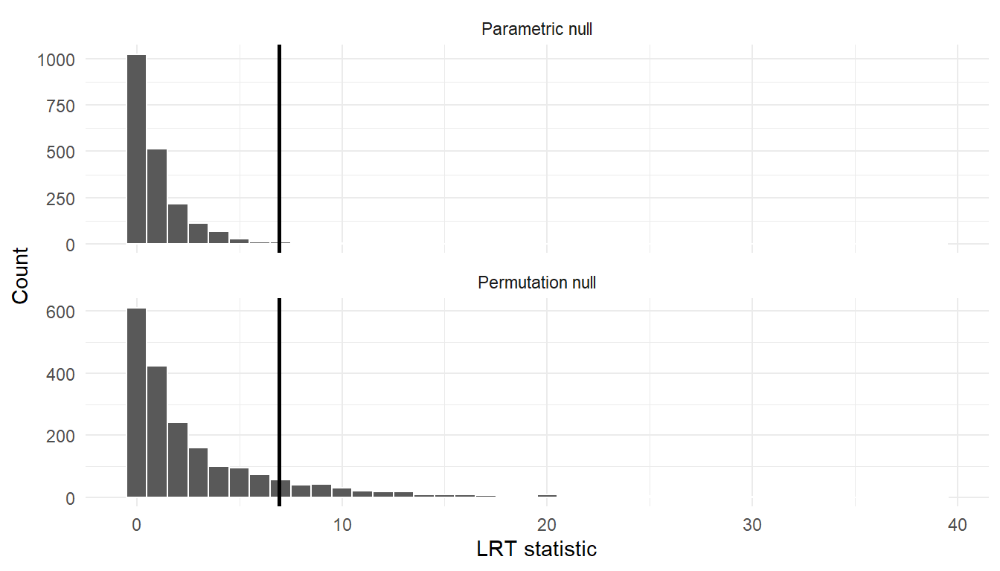

set.seed(1)
x <- c(12.1, 10.4, 11.7, 9.9, 10.8, 13.2, 11.0, 10.6, 12.5, 9.8)
n <- length(x)
t_obs_mean <- mean(x)
t_obs_median <- median(x)
boot_mean_np <- numeric(B)
boot_median_np <- numeric(B)
for (b in seq_len(B)) {
x_star <- sample(x, size = n, replace = TRUE)
boot_mean_np[b] <- mean(x_star)
boot_median_np[b] <- median(x_star)
}
se_mean_np <- sd(boot_mean_np)
bias_mean_np <- mean(boot_mean_np) - t_obs_mean
ci_mean_np <- percentile_ci(boot_mean_np)
ci_median_np <- percentile_ci(boot_median_np)
stats_df <- data.table(
"Mean" = t_obs_mean,
"Bootstrap Mean" = stat_with_ci(boot_mean_np, stat = mean),
"Bootstrap SE (Mean)" = se_mean_np,
"Bootstrap Bias (Mean)" = bias_mean_np,
"Median" = t_obs_median,
"Bootstrap Median" = stat_with_ci(boot_median_np, stat = mean)
)
# round only nums
stats_df <- stats_df %>%
mutate(across(where(is.numeric), ~ round(., 3)))
# melt
stats_df <- melt(stats_df,
measure.vars = names(stats_df),
variable.name = "statistic",
value.name = "value"
)
## put this in a table
data_table(stats_df, pageLength = 10)Bootstrap in Practice: CIs, Hypothesis Tests, and a Crab-Data Case Study
Data & Evidence
Statistics
Bootstrap
A practical note on bootstrap confidence intervals, hypothesis tests, and model uncertainty using a crab-data case study.
1. Introduction: what bootstrap is
Any statistic we compute from a sample (a mean, a median, a regression coefficient, a predicted value) has sampling uncertainty: if we repeated the data collection, we would get a slightly different estimate.
The bootstrap is a general, simulation-based way to measure that uncertainty.
- Treat the observed data as our best stand-in for the population.
- Generate many new datasets from it.
- Recompute the statistic on each dataset.
- Use the spread of those bootstrap replicates to approximate uncertainty.
2. The two most common bootstrap types
2.1 Nonparametric bootstrap (resample the data)
Resample the observed data with replacement. For i.i.d. data, that usually means resampling rows.
- Makes minimal distributional assumptions.
- Very broadly applicable.
- For hypothesis tests, you still need a way to generate samples under the null (often via centering/transformations, or residual-based bootstraps).
2.2 Parametric bootstrap (simulate from a fitted model)
Assume a parametric model is a reasonable approximation, fit it, then simulate new datasets from the fitted model.
- Stronger assumptions.
- Particularly natural for likelihood-based models and likelihood-ratio tests.
- Often excellent for generating null distributions during hypothesis testing, because you can simulate directly under \(H_0\). A null distribution is the assumption that the model is correct under \(H_0\), so simulating from it gives you a direct way to get a null distribution for your test statistic. eg when doing an independent two-sample t-test, you can simulate a new data set using \(N(\hat\mu, \hat\sigma^2)\) under \(H_0\).
3. Constructing bootstrap estimates and confidence intervals
Let \(T\) be a statistic (e.g., \(T(x) = \bar x\)). The bootstrap procedure is:
- Compute \(T_{obs} = T(x)\).
- For \(b=1,\dots,B\):
- generate a bootstrap dataset \(x^{*(b)}\),
- compute \(T^{*(b)} = T(x^{*(b)})\).
- Use \(\{T^{*(b)}\}\) to estimate SEs and CIs.
3.1 Nonparametric bootstrap for a mean (and a median)
- The observed sample mean is $x = $ 11.2 and the observed median is 10.9.
- The bootstrap SE (
mean_boot_se) is the typical sampling fluctuation of the mean across repeated samples of size 10. - The bootstrap bias estimate (
mean_boot_bias) is -0.002. With finite \(B\), this is a noisy estimate; if it’s small relative to the SE, you typically wouldn’t worry about bias. - The 95% percentile bootstrap CI for the mean is [10.6, 11.831]. Interpreted literally: if we repeated the whole sampling process many times, about 95% of such intervals would contain the true population mean.
- The 95% percentile bootstrap CI for the median is [10.25, 12.1]. Comparing the widths of the mean vs median CIs gives you a feel for which statistic is more variable for this sample size.
3.2 Parametric bootstrap for a mean (Normal model)
If we’re comfortable assuming the data are approximately Normal, we can bootstrap by simulating \(x^* \sim \mathcal{N}(\hat\mu, \hat\sigma)\).
mu_hat <- mean(x)
sigma_hat <- sd(x)
boot_mean_par <- numeric(B)
for (b in seq_len(B)) {
x_star <- rnorm(n, mean = mu_hat, sd = sigma_hat)
boot_mean_par[b] <- mean(x_star)
}
se_mean_par <- sd(boot_mean_par) |> round(3)
ci_mean_par <- percentile_ci(boot_mean_par)
data.table(
`Bootstrap SE (mean)` = se_mean_par,
`Bootstrap 95% CI (mean)` = ci_mean_par
) |>
data_table()How to interpret this output
- This CI answers the same question as the nonparametric CI, but under the Normal model assumption.
- The parametric bootstrap 95% CI for the mean is [10.513, 11.92]
- If the parametric and nonparametric CIs are very similar here, it suggests the Normal approximation is not doing something wildly different from what the data-driven resampling is doing (at least for the mean).
4. Bootstrap hypothesis testing
Bootstrap testing needs one extra ingredient: bootstrap samples must reflect \(H_0\).
General recipe:
- Choose a test statistic \(T\).
- Compute \(T_{obs}\).
- Generate many bootstrap datasets consistent with \(H_0\).
- Compute \(T^{*(b)}\) each time.
- Approximate the p-value by how often \(T^{*(b)}\) is as extreme as \(T_{obs}\).
This is called a Monte Carlo p-value. The usual small-sample correction (it also avoids getting a p-value of exactly 0) is
\[\hat p = \frac{1 + \#\{T^* \ge T_{obs}\}}{B+1},\]
- You generate \(B\) bootstrap datasets under the null hypothesis \(H_0\) (using a resampling/simulation method that makes the null true).
- You compute the test statistic on each null dataset, giving \(T^{*(1)},\dots,T^{*(B)}\).
Right-tailed, left-tailed, and two-sided tests
Right-tailed (large \(T\) is evidence against \(H_0\)):
\[\hat p = \frac{1 + \#\{T^* \ge T_{obs}\}}{B+1}.\]
Left-tailed (small \(T\) is evidence against \(H_0\)):
\[\hat p = \frac{1 + \#\{T^* \le T_{obs}\}}{B+1}.\]
Two-sided (far from the null target is evidence against \(H_0\)): pick the null target value \(T_0\) (often 0), and count how often you get something at least as far from \(T_0\) as the observed statistic:
\[\hat p = \frac{1 + \#\{|T^* - T_0| \ge |T_{obs} - T_0|\}}{B+1}.\]
4.1 One-sample mean: bootstrap version of a \(t\) test
We test \(H_0: \mu = \mu_0\) using the usual t-statistic: \[T = \frac{\bar x - \mu_0}{s/\sqrt{n}}.\]
We’ll compare:
- classical
t.test(), - a nonparametric bootstrap test under \(H_0\) (by recentering the data),
- a parametric bootstrap test under \(H_0\) (simulate Normal samples with mean \(\mu_0\)).
These two bootstraps differ only in how they generate samples under \(H_0\):
- Nonparametric under \(H_0\): recenter the data so it has mean \(\mu_0\), then resample with replacement.
- Parametric under \(H_0\): assume \(X \sim \mathcal{N}(\mu, \sigma^2)\), estimate \(\sigma\) from the data, then simulate samples from \(\mathcal{N}(\mu_0, \hat\sigma^2)\).
mu0 <- 11
t_classical <- t.test(x, mu = mu0)
p_classical <- unname(t_classical$p.value)
# Observed test statistic
t_obs <- unname(t_classical$statistic)
# Nonparametric bootstrap under H0: recenter then resample
x0 <- x - mean(x) + mu0
t_boot_np <- numeric(B)
for (b in seq_len(B)) {
xs <- sample(x0, size = n, replace = TRUE)
t_boot_np[b] <- unname(t.test(xs, mu = mu0)$statistic)
}
p_np <- bootstrap_p_value(t_boot_np, t_obs, two_sided = TRUE)
# Parametric bootstrap under H0: simulate Normal with mean mu0
sigma0_hat <- sqrt(var(x))
t_boot_par <- numeric(B)
for (b in seq_len(B)) {
xs <- rnorm(n, mean = mu0, sd = sigma0_hat)
t_boot_par[b] <- unname(t.test(xs, mu = mu0)$statistic)
}
p_par <- bootstrap_p_value(t_boot_par, t_obs, two_sided = TRUE)
c(
classical_t_test = p_classical,
bootstrap_nonparametric = p_np,
bootstrap_parametric = p_par
) classical_t_test bootstrap_nonparametric bootstrap_parametric
0.5910512 0.5772114 0.5922039 - All three numbers are p-values for the same null, $H_0: = $ 11, using the same \(t\)-statistic.
- The observed test statistic is $t_{obs} = $ 0.557. The bootstrap p-values estimate \(\Pr(|T^*| \ge |t_{obs}| \mid H_0)\) by simulation.
- If the p-value is small (commonly < 0.05), the observed statistic would be rare under \(H_0\), so you have evidence against \(H_0\).
- Don’t expect the three p-values to be identical: they differ in how they generate data under \(H_0\) (exact \(t\) reference vs recenter-and-resample vs Normal simulation).
- Because the bootstrap p-values are Monte Carlo estimates, they have simulation noise. With 2000 replicates, differences in the 3rd decimal place are usually not meaningful.
5. Advanced bootstrap: likelihood-ratio testing on crab data
This section uses the horseshoe crab dataset in glm2 (a classic example for count regression). Reference: Horseshoe crab dataset in glm2
data(crabs)
head(crabs) |>
data_table()In this study, each row corresponds to a female horseshoe crab. The main variables we use are:
Satellites: the number of satellite males observed with that female (a count outcome, often with many zeros),Width: the female’s carapace width (a size measure),Dark: an indicator of shell colour (dark vs not).
The scientific question is: after accounting for size (Width), does shell colour (Dark) still help explain how many satellites a female has?
The outcome (Satellites) is a count, so we fit a Poisson GLM:
Reduced (null) model:
Satellites ~ WidthFull model:
Satellites ~ Width + DarkNull hypothesis (\(H_0\)): after adjusting for female size (
Width), shell colour (Dark) has no association with the expected number of satellite males. In other words, addingDarkdoes not improve the model.Alternative hypothesis (\(H_1\)): after adjusting for
Width, shell colour (Dark) is associated with the expected number of satellite males (so addingDarkimproves the model).
In model terms, this is the same as testing whether the Dark coefficient is zero (for the appropriate coding of Dark), typically written as \(H_0: \beta_{Dark} = 0\) versus \(H_1: \beta_{Dark} \ne 0\).
5.1 Classical LRT (chi-square reference)
fit_full <- glm(
Satellites ~ Width + Dark,
family = poisson(link = "log"),
data = crabs
)
fit_red <- glm(
Satellites ~ Width,
family = poisson(link = "log"),
data = crabs
)
lrt_table <- anova(fit_red, fit_full, test = "Chisq") |> tidy()
T_obs <- lrt_table$deviance[2]
p_lrt_classical <- lrt_table$p.value[2]lrt_table |>
kable(
format = "html",
booktabs = TRUE,
align = "lccccc",
escape = FALSE,
col.names = c("Model", "Resid. Df", "Resid. Dev.", "Df", "$\\chi^2$", "$p$-value")
) |>
kable_styling(latex_options = c("scale_down", "hold_position"),
font_size = 9, full_width = TRUE) |>
column_spec(1, width = "5cm")| Model | Resid. Df | Resid. Dev. | Df | $\chi^2$ | $p$-value |
|---|---|---|---|---|---|
| Satellites ~ Width | 171 | 567.8786 | NA | NA | NA |
| Satellites ~ Width + Dark | 170 | 560.9576 | 1 | 6.92101 | 0.0085189 |
- The LRT statistic is \(T = 2(\ell_{full} - \ell_{red})\), reported here as
$\\chi^2$. For these data, $T_{obs} = $ 6.921. - The chi-square p-value (0.00852) is based on a large-sample reference distribution (\(T \overset{approx}{\sim} \chi^2_{df}\)).
- If this p-value is small, it suggests the full model fits meaningfully better, i.e.,
Darkadds information beyondWidth.
5.2 Parametric bootstrap LRT p-value (null simulation)
Generate bootstrap datasets under \(H_0\) by simulating new counts from the reduced model.
Assumptions under \(H_0\) (parametric bootstrap):
- The reduced Poisson GLM is correctly specified under the null: conditional on
Width, satellite counts follow a Poisson distribution with mean \(\mu_i\) and log link. - Observations are independent (each crab is an independent sampling unit).
- The covariates (
Width,Dark) are treated as fixed (or we condition on them). Under \(H_0\) the distribution of \(Y\) depends onWidthbut not onDark.
This is not a permutation/exchangeability argument: we are not shuffling Dark labels. We are simulating \(Y\) from an assumed model \(Y \mid X \sim \text{Poisson}(\hat\mu_0(X))\).
n_crabs <- nrow(crabs)
mu_hat0 <- fitted(fit_red)
T_boot_parametric <- numeric(B)
for (b in seq_len(B)) {
y_star <- rpois(n_crabs, lambda = mu_hat0)
dat_star <- crabs
dat_star$Satellites <- y_star
fit_red_b <- glm(Satellites ~ Width,
family = poisson(link = "log"),
data = dat_star
)
fit_full_b <- glm(Satellites ~ Width + Dark,
family = poisson(link = "log"), data = dat_star
)
T_boot_parametric[b] <- as.numeric(
2 * (logLik(fit_full_b) - logLik(fit_red_b))
)
}
p_lrt_parametric <- bootstrap_p_value(T_boot_parametric, T_obs,
two_sided = FALSE
)
p_lrt_parametric[1] 0.009495252- This p-value estimates \(\Pr(T^* \ge T_{obs} \mid H_0)\) where \(T^*\) is generated by simulating new outcomes from the reduced (null) Poisson GLM.
- Here, \(\hat p \approx\) 0.0095. If it’s close to the chi-square p-value, that suggests the asymptotic reference is adequate.
- If it differs noticeably, the bootstrap is warning you that the chi-square approximation may be a bit off for this sample/model.
5.3 Permutation test (shuffling Dark, keeping Y and Width fixed)
If you want a fully nonparametric way to get a null distribution for the Dark effect, a natural option is a permutation test.
Idea: under \(H_0\) (Dark has no association with satellites after adjusting for width), the Dark labels should be exchangeable given Width. To make given Width more concrete, we do a stratified permutation: bin Width and only shuffle Dark within bins.
set.seed(123)
width_bin <- ntile(crabs$Width, 5)
T_boot_perm <- numeric(B)
for (b in seq_len(B)) {
dat_perm <- crabs
dark_perm <- dat_perm$Dark
for (g in sort(unique(width_bin))) {
idx_g <- which(width_bin == g)
dark_perm[idx_g] <- sample(dark_perm[idx_g],
size = length(idx_g), replace = FALSE
)
}
dat_perm$Dark <- dark_perm
fit_red_b <- glm(Satellites ~ Width,
family = poisson(link = "log"),
data = dat_perm
)
fit_full_b <- glm(Satellites ~ Width + Dark,
family = poisson(link = "log"), data = dat_perm
)
T_boot_perm[b] <- as.numeric(2 * (logLik(fit_full_b) - logLik(fit_red_b)))
}
p_perm <- bootstrap_p_value(T_boot_perm, T_obs, two_sided = FALSE)
p_perm[1] 0.133933- This p-value answers a different “null world” than the parametric bootstrap: it treats the outcome model as unknown and instead tests whether the
Darklabels are (approximately) exchangeable withinWidthbins under \(H_0\). - Here, \(\hat p \approx\) 0.134. If this is small, then shuffling
Dark(while preserving theWidthstructure) rarely produces an LRT statistic as large as the observed one. - If the permutation and parametric-bootstrap p-values disagree, that’s a signal to think carefully about which assumptions are more defensible for this dataset.
df_plot <- tibble(
T = c(T_boot_parametric, T_boot_perm),
method = rep(c("Parametric null", "Permutation null"), each = B)
)
ggplot(df_plot, aes(x = T)) +
geom_histogram(bins = 40, color = "white") +
geom_vline(xintercept = T_obs, linewidth = 1) +
facet_wrap(~method, ncol = 1, scales = "free_y") +
labs(x = "LRT statistic", y = "Count") +
theme_minimal()
6. Prediction intervals with bootstrap
Confidence intervals quantify uncertainty for an unknown parameter (or mean prediction). Prediction intervals are wider because they must also include the randomness of a new observation.
We’ll build a bootstrap prediction interval for the number of satellites for a new crab with a chosen width and shell color.
- CI for the mean: uncertainty in \(\mu(x)\).
- Prediction interval: uncertainty in a future \(Y\) at that \(x\) (mean uncertainty + Poisson noise).
new_crab <- tibble(
Width = 26,
Dark = factor("yes", levels = levels(crabs$Dark))
)
pred_mean_boot <- numeric(B)
pred_y_boot <- numeric(B)
for (b in seq_len(B)) {
idx <- sample.int(n_crabs, n_crabs, replace = TRUE)
dat_b <- crabs[idx, ]
fit_b <- glm(Satellites ~ Width + Dark,
family = poisson(link = "log"), data = dat_b
)
mu_b <- as.numeric(predict(fit_b,
newdata = new_crab,
type = "response"
))
pred_mean_boot[b] <- mu_b
pred_y_boot[b] <- rpois(1, lambda = mu_b)
}
ci_mean <- percentile_ci(pred_mean_boot)
pi_y <- percentile_ci(pred_y_boot)
list(
mean_CI_95 = ci_mean,
prediction_interval_95 = pi_y
)$mean_CI_95
[1] "[1.553, 2.942]"
$prediction_interval_95
[1] "[0, 5]"- The 95% CI for the mean (
mean_CI_95) is for the expected number of satellites for a crab withWidth = 26andDark = yes. - The 95% prediction interval (
prediction_interval_95) is for a single future crab’s observed count at that same \((Width, Dark)\). It is wider because it includes both parameter uncertainty and Poisson outcome noise. - If you care about the average response, use the CI; if you care about what an individual new observation might look like, use the prediction interval.
7. Conclusion
- Bootstrap is a general-purpose tool for uncertainty when analytic formulas are fragile or inconvenient.
- Nonparametric bootstrap resamples the observed data; parametric bootstrap simulates from a fitted model.
- For confidence intervals, percentile bootstrap is a simple baseline; for hypothesis tests, bootstrap samples must reflect \(H_0\).
- For GLMs and likelihood ratios, parametric (null) bootstrap is a natural way to avoid relying only on asymptotic chi-square approximations.
- Prediction intervals via bootstrap are often the most directly useful output because they live on the outcome scale.